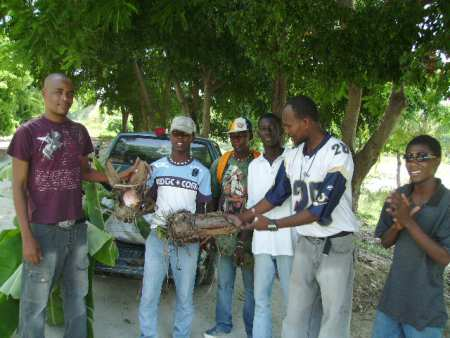
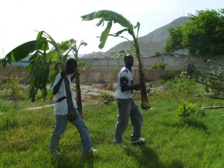

Jardinage écologique
Rép. Dém. du Congo: RD Congo : Présentation visuelle des défis de la gestion durable par bassins versants
Voici les images de la présentation de M. Jean Mudekereza sur les défis de la gestion durable par bassins versants. Effectivement, l'érosion des sols est un problème accru par de mauvaises pratiques agricoles et des constructions anarchiques. Il fait là un survol de la problématique de la conservation des sols.
Je me permets d'ajouter ici un lien très pertinent au sujet des solutions possibles pour une meilleure gestion de l'érosion hydrique. La voici : http://www.ma.refer.org/erosion/chapitre1/VI.Lutte.html
Gonaïves, Haïti: Gonaïves: le jardin scolaire de Terre des Jeunes en vert


Salut à tous,
Le jardin scolaire de Terre
des Jeunes attire bien des
filles et des gars qui
admirent sa couleur verte
avec une frondaison qui vient
vitement après seulement deux
ans. Des fleurs, des
arbustes, des légumes et des
arbres géants font du jardin
actuellement un lieu
admirable pour les jeunes du
coin.
Cet été, les jeunes du réseau
des écoles se sont réunis
toutes les semaines dans une
programmation avec Pro-heurta
les lundi, jeudi et samedi,
une façon de s’assurer de la
bonne gestion de l’espace et
que tout marche bien dans ce
coin qu’ils ont créé
eux-mêmes, avec leur propre
énergie et leur
fidélité.
Joel
Gonaïves, Haïti: Plantation de bananiers et de manioc
Le jardin collectif aura désormais des bananiers. C'est une plante très intéressante car elle est une source de revenu. Nous voilà en voie d'autonomiser le fonctionnement du jardin!
Ce weekend le comité des jeunes des 45 écoles des Gonaïves s'est déplacé, à l'extérieur des Gonaïves, pour faire l’achat de drageons de bananes et de boutures de manioc qui seront bientôt plantés dans le jardin. Les jeunes se sentaient réellement contents de ces deux premiers jours de travail et d’actions pour cette période estivale.

Plus d’une vingtaine de jeunes ont voulu faire le déplacement aussi mais ce n’était pas trop prudent de faire le déplacement avec une quantité de jeunes dans des routes si difficiles sans pouvoir leur assurer des moyens locomotions adaptés. Ainsi, on a fait le choix d’une partie du comité des jeunes de toutes les écoles parmi les plus engagés depuis des années.
C’était aussi un moment de faire la cueillette pour les jeunes, certains ont récolté du maïs pour apporter chez eux et d’autres ont récolté de l’épinard.
Québec: Un jardin alvéolaire dans la région de Lanaudière
À une cinquantaine de kilomètres au nord de Joliette un jardin traditionnel Alvéolaire est en train de voir le jour! Oui oui je dis bien alvéolaire, en forme d'hexagone avec 6 triangles, d'un diamètre de 7 mètres aux pointes, et de 6 mètres de côté à côté. Cette forme ancestrale nous vient de toutes les cultures et traditions d'Amérique où l'on retouve les 3 soeurs (Mais, Haricot, Courge) qui poussent en symbiose les unes avec les autres, ainsi que plein d'autres plantes complices. Ce jardin est un lieu d'apprentissage, d'expérimentation et aussi de Vie pour tous ceux et celles qui veulent apprendre et passer du bon temps avec mère Nature.
Pour information: terredesjeunes@hotmail.com
Gonaïves, Haïti: Le jardin, un mois après l'inauguration
 Un
mois jour pour jour
apres l'inauguration du
jardin collectif au Lycee du
Bicentenaire aux Gonaives,on
observe deja une couverture
vegetale bien considerable
suite un test de premiere
plantation"haricot vert" avec
les eleves du lycee,dans un
mois plus tard les eleves
vont faire leur premier
recolte, sa se vreman
kool !
Un
mois jour pour jour
apres l'inauguration du
jardin collectif au Lycee du
Bicentenaire aux Gonaives,on
observe deja une couverture
vegetale bien considerable
suite un test de premiere
plantation"haricot vert" avec
les eleves du lycee,dans un
mois plus tard les eleves
vont faire leur premier
recolte, sa se vreman
kool !
 Deux jours apres la reverture
de la classe cette
annee,certain eleves arrivent
avec baucoup
de curiosite pour etre
sur de leur plantation, Il
faut toute fois signaler
parmir les 200 arbres plantes
a l'interieur du jardin,
seulement 5% ont subit le
reganissage.
Deux jours apres la reverture
de la classe cette
annee,certain eleves arrivent
avec baucoup
de curiosite pour etre
sur de leur plantation, Il
faut toute fois signaler
parmir les 200 arbres plantes
a l'interieur du jardin,
seulement 5% ont subit le
reganissage.
Gonaïves, Haïti: Journée internationale des Volontaires en Haïti et l’inauguration d’un jardin communautaire aux Gonaïves
.jpg)
Pour plus de photos voir http://reforestation.net/image/tid/10
L’Organisation transnationale Terre des Jeunes et e Programme Volontaires des Nations Unies en Haïti ont inauguré un jardin communautaire, le 5 décembre 2008, au Lycée du Bicentenaire des Gonaïves. Cette activité rentre dans le cadre de la commémoration de la Journée internationale des Volontaires. Des personnalités de la MINUSTAH dont le Représentant spécial adjoint principal du Secrétaire Général des Nations Unies, Luis Carlos da Costa, le représentant de la délégation de Terre des Jeunes en Haïti, Daniel Antji Ouaché et des autorités haïtiennes ont pris part à la cérémonie et ont planté tous de façon symbolique un arbre pour commémorer cette journée centrée sur la thématique de l‘environnement.
« Ce jardin communautaire / scolaire va nous permettre d’obtenir, au fur et mesure, un changement de comportement chez les jeunes et écoliers de la région, vis-à-vis de leur environnement et la rénovation le contact de nos chers compatriotes à la nature », a pour sa part déclaré, Joël Dieuseul Augustin, agronome, coordinateur de projet pour Terre des Jeunes, une Organisation transnationale dont le siège est au Canada, et qui possède des représentations aux Gonaïves et a Port-au-Prince.Lire la suite
Gonaïves, Haïti: Un jardin communautaire voit enfin le jour aux Gonaïves
|
|


PARTENAIRES
Terre des Jeunes
Fondation Roncalli
La MINUSTAH
Le Programme des Volontaires
des Nations Unies en Haïti
(Partenariat entre UNV COT/
PNUD, UNV Support Unit de la
MINUSTAH) et autres
organisations de volontaires
basées
aux Gonaïves
École du Bicentenaire
 L'initiative
de Terre des jeunes Gonaïves
de créer un jardin
communautaire derrière
l'école du Bicentenaire a
suscité beaucoup
d'enthousiasme, chez les
élèves comme chez les
autorités locales et les
organisations
internationales. Voyez notre
galerie
photo pour d'autres
images.
L'initiative
de Terre des jeunes Gonaïves
de créer un jardin
communautaire derrière
l'école du Bicentenaire a
suscité beaucoup
d'enthousiasme, chez les
élèves comme chez les
autorités locales et les
organisations
internationales. Voyez notre
galerie
photo pour d'autres
images.
Suite à la mise en place du projet par Terre des jeunes, des bénévoles de Terre des jeunes, des élèves et des Volontaires des Nations-Unies travaillent d'arrache-pied, tout le mois de novembre, pour nettoyer le terrain, planter des arbres et des semences maraîchères.
 1.Nettoyage
du terrain du jardin
1.Nettoyage
du terrain du jardin
2.Construction d’une clôture
vivant avec des bambous et
des gommiers
3.Réparations du puits
4.Plantations de 200
plantules d’arbres
5.Installation d’une pompe
manuelle
6. Protection de plantules et
arrosage.
7.Début de la production
maraichère.
8.Un reposoir et une
pépinière seront aussi
bientôt réalisés.
 Le
Jardin sera inauguré le 5
décembre 2008, Journée
internationale des
Volontaires, et certaines
personnalités planteront un
arbre aux cotés des enfants.
Une formation en risques et
désastres sera planifiée avec
les organisations partenaires
en décembre/janvier et
devrait débuter en février et
durer durant toute la saison
sèche jusqu'à la Fête de
l’arbre (en Juin).
Le
Jardin sera inauguré le 5
décembre 2008, Journée
internationale des
Volontaires, et certaines
personnalités planteront un
arbre aux cotés des enfants.
Une formation en risques et
désastres sera planifiée avec
les organisations partenaires
en décembre/janvier et
devrait débuter en février et
durer durant toute la saison
sèche jusqu'à la Fête de
l’arbre (en Juin).
Des Spots seront diffusés par la radio une semaine avant l'inauguration par MINUSTAH FM (dans tout le pays) et par les principales radios des Gonaïves et de Port-au-Prince afin de sensibiliser les Haïtiens à l’importance de l’action volontaire. La journée sera couverte par Minustah FM et par les principales radios des Gonaïves. Les spots sont créés et conceptualisés par Terre des Jeunes et l’unité de support des UNVs. La production des spots est réalisée dans les studios de MINUSTAH FM.Lire la suite